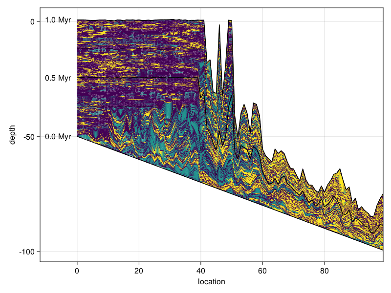

Combining CA with production
This model combines BS92 production with the B13 cellular automaton.
Complete example
This example is running for 10000 steps to 1Myr on a 100 $\times$ 50 grid, starting with a sloped height down to 50m. The sea_level, and initial_depth arguments are functions. The phys_scale argument translate pixels on the grid into physical metres. The write_interval indicates to write output every 10 iterations, summing the production over that range. You may copy paste the following code into your own script or notebook, and play around with input values.
#| creates: data/caps-osc.h5
#| requires: src/CaProd.jl
module Script
using CarboKitten.BoundaryTrait: Shelf
using CarboKitten.Config: Box, TimeProperties
using CarboKitten.Burgess2013.Config: MODEL1
using CarboKitten.CaProd
using Unitful
const PERIOD = 200.0u"kyr"
const AMPLITUDE = 4.0u"m"
const DEFAULT_INPUT = CaProd.Input(
box = Box{Shelf}(
grid_size = (100, 50),
phys_scale = 0.15u"km"
# equivalent:
# phys_scale = 150"m"
),
time = TimeProperties(
Δt = 0.0001u"Myr",
# equivalent:
# Δt = 1u"kyr",
steps = 10000,
write_interval = 10
),
sea_level = t -> AMPLITUDE * sin(2π * t / PERIOD),
subsidence_rate=50.0u"m/Myr",
initial_depth=x -> x / 300.0,
facies=MODEL1,
insolation=400.0u"W/m^2"
)
end
Script.CaProd.main(Script.DEFAULT_INPUT, "data/caps-osc.h5")This writes output to an HDF5 file that you may use for further analysis and visualization.
#| creates: docs/src/_fig/b13-capsosc-crosssection.png
#| requires: data/caps-osc.h5 ext/VisualizationExt.jl
#| collect: figures
module Script
using CairoMakie
using GeometryBasics
using CarboKitten.Visualization
function main()
f = Figure()
plot_crosssection(f[1,1], "data/caps-osc.h5")
save("docs/src/_fig/b13-capsosc-crosssection.png", f)
end
end
Script.main()
Input
- initial depth (function of space)
- sea-level curve (function of time)
- subsidence (function of time)
- facies types
These should all behave as a functions, but could also be some interpolated data. The signs of these quantities should be such that the following equation holds:
\[T + E = S + W\]
Saying Tectonic subsidence plus Eustatic sea-level change equals Sedimentation plus change in Water depth.
@kwdef struct Input
box::Box
time::TimeProperties
sea_level # Myr -> m
subsidence_rate::typeof(1.0u"m/Myr")
initial_depth # m -> m
facies::Vector{Facies}
insolation::typeof(1.0u"W/m^2")
endIn the case write_interval is not one, we will sum production rates over several iterations of the model before writing to output. In that case sediment production per written frame is no longer limited to a single facies.
Output
Each iteration of the model, we produce a Frame.
struct Frame
production::Array{typeof(1.0u"m/Myr"),3}
endThe frame is used to update a state $S$. The frame should be considered a delta for the state. So, we can reproduce the height at each step from the frames.
mutable struct State
time::typeof(1.0u"Myr")
ca::Array{Int}
ca_priority::Vector{Int}
height::Array{typeof(1.0u"m"),2}
endThe output is principally all frames produced in the simulation, in a 4-dimensional array. The first two dimensions are x, y positions on the grid, the third is the facies and the fourth dimension is time. We store the output in HDF5, having an input group where we store the input data, and a sediment dataset containing the aforementioned 4-dimensional output data. Note that these are production rates, so to reconstruct the sea floor depth at any time, you need to multiply by $\Delta t * n_w$, where $n_w$ is the write_interval and take a cumulative sum.
Logic
From a dynamical modeling point of view, CarboCAT operates analogous to a forward Euler integration scheme, where some components are actually a discrete model. This means we have one function that generates a Frame from a State, called the propagator $P$ (this is our own nomenclature),
\[P_i: S \to \Delta.\]
The suffix $i$ here is used to indicate that the propagator depends on the input. We'll have a second function $U$ that updates the state with the given frame,
\[U: (S, \Delta) \to S.\]
In practice however, the update function changes the state in-place.
Init
We fill the height map with the initial depth function. It is assumed that the height only depends on the second index.
function initial_state(input) # -> State
height = zeros(Float64, input.box.grid_size...) * u"m"
for i in CartesianIndices(height)
height[i] = input.initial_depth(i[1] * input.box.phys_scale)
end
n_facies = length(input.facies)
ca = rand(0:n_facies, input.box.grid_size...)
state = State(0.0u"Myr", ca, 1:n_facies, height)
step = step_ca(input.box, input.facies)
for _ = 1:20
step(state)
end
return state
endPropagator
The propagator computes the production rates (and also erosion) given the state of the model.
function propagator(input)
<<ca-prod-init-propagator>>
function (s) # -> Frame
<<ca-prod-propagate>>
end
endThe propagator keeps the cellular automaton as an internal state, but this may also be considered to be an input function. This may change when you'd want to influence the CA with environmental factors. Then the CA becomes an integral component of the dynamical model. The CA would then have to keep state in the State variable. We burn the first 20 iterations of the CA to start with a realistic pattern.
n_facies = length(input.facies)
function water_depth(s)
s.height .- input.sea_level(s.time)
endNow, to generate a production from a given state, we advance the CA by one step and compute the production accordingly.
result = zeros(typeof(0.0u"m/Myr"), input.box.grid_size..., n_facies)
w = water_depth(s)
for idx in CartesianIndices(s.ca)
f = s.ca[idx]
if f == 0
continue
end
result[Tuple(idx)..., f] = production_rate(input.insolation, input.facies[f], w[idx])
end
return Frame(result)Updater
Every iteration we update the height variable with the subsidence rate, and add sediments to the height.
function updater(input::Input)
n_facies = length(input.facies)
function (s::State, Δ::Frame)
s.height .-= sum(Δ.production; dims=3) .* input.time.Δt
s.height .+= input.subsidence_rate * input.time.Δt
s.time += input.time.Δt
end
endLoop
function run_model(input::Input)
Channel{Frame}() do ch
s = initial_state(input)
p_production = propagator(input)
p_ca! = step_ca(input.box, input.facies)
u! = updater(input)
while true
p_ca!(s)
Δ = p_production(s)
put!(ch, Δ)
u!(s, Δ)
end
end
endmodule CaProd
using CarboKitten
using ..Utility
using ..Config: Box, TimeProperties
using ..BoundaryTrait: Periodic
using ..Utility
# using CarboKitten.BS92: sealevel_curve
using ..Stencil
using ..Burgess2013
using ..Burgess2013.CA: step_ca
using HDF5
using Unitful
using .Iterators: drop, peel, partition, map, take
<<ca-prod-input>>
<<ca-prod-frame>>
<<ca-prod-state>>
<<ca-prod-model>>
function stack_frames(fs::Vector{Frame}) # -> Frame
Frame(sum(f.production for f in fs))
end
function main(input::Input, output::String)
y_axis = (0:(input.box.grid_size[2]-1)) .* input.box.phys_scale
x_axis = (0:(input.box.grid_size[1]-1)) .* input.box.phys_scale
initial_height = input.initial_depth.(x_axis)
n_writes = input.time.steps ÷ input.time.write_interval
h5open(output, "w") do fid
gid = create_group(fid, "input")
gid["x"] = collect(x_axis) |> in_units_of(u"m")
gid["y"] = collect(y_axis) |> in_units_of(u"m")
gid["height"] = collect(initial_height) |> in_units_of(u"m")
gid["t"] = collect((0:(n_writes-1)) .* (input.time.Δt * input.time.write_interval)) |> in_units_of(u"Myr")
attr = attributes(gid)
attr["delta_t"] = input.time.Δt |> in_units_of(u"Myr")
attr["write_interval"] = input.time.write_interval
attr["time_steps"] = input.time.steps
attr["subsidence_rate"] = input.subsidence_rate |> in_units_of(u"m/Myr")
attr["n_facies"] = length(input.facies)
n_facies = length(input.facies)
ds = create_dataset(fid, "sediment", datatype(Float64),
dataspace(input.box.grid_size..., n_facies, input.time.steps),
chunk=(input.box.grid_size..., n_facies, 1))
results = map(stack_frames, partition(run_model(input), input.time.write_interval))
for (step, frame) in enumerate(take(results, n_writes))
ds[:, :, :, step] = frame.production |> in_units_of(u"m/Myr")
end
end
end
end # CaProdCase 1
The first case uses the same settings as Burgess 2013: an initial depth of 2m, subsidence rate of 50 m/Myr and constant sea level.
#| creates: data/ca-prod.h5
#| requires: src/CaProd.jl
module Script
using CarboKitten.CaProd
using CarboKitten.BoundaryTrait
using CarboKitten.Config: Box, TimeProperties
using CarboKitten.Burgess2013.Config: MODEL1
using Unitful
const DEFAULT_INPUT = CaProd.Input(
box = Box{Periodic{2}}(
grid_size = (50, 50),
phys_scale = 1.0u"m"
),
time = TimeProperties(
Δt = 0.001u"Myr",
steps = 1000,
write_interval = 1
),
sea_level=_ -> 0.0u"m",
subsidence_rate=50.0u"m/Myr",
initial_depth=_ -> 2.0u"m",
facies=MODEL1,
insolation=2000.0u"W/m^2"
)
end
CaProd.main(Script.DEFAULT_INPUT, "data/ca-prod.h5")Case 2
For the second case, we start with a slope.
#| creates: data/ca-prod-slope.h5
#| requires: src/CaProd.jl
module Script
using CarboKitten.BoundaryTrait: Shelf
using CarboKitten.Config: Box, TimeProperties
using CarboKitten.Burgess2013.Config: MODEL1
using CarboKitten.CaProd
using Unitful
const DEFAULT_INPUT = CaProd.Input(
box = Box{Shelf}(
grid_size = (100, 50),
phys_scale = 0.15u"km"
),
time = TimeProperties(
Δt = 0.001u"Myr",
steps = 1000,
write_interval = 1
),
sea_level=_ -> 0.0u"m",
subsidence_rate=50.0u"m/Myr",
initial_depth=x -> x / 300.0,
facies=MODEL1,
insolation=400.0u"W/m^2"
)
end
Script.CaProd.main(Script.DEFAULT_INPUT, "data/ca-prod-slope.h5")#| creates: docs/src/_fig/b13-crosssection.png
#| requires: data/ca-prod-slope.h5 ext/VisualizationExt.jl
#| collect: figures
module Script
using CairoMakie
using CarboKitten.Visualization
function main()
f = Figure()
plot_crosssection(f[1, 1], "data/ca-prod-slope.h5")
save("docs/src/_fig/b13-crosssection.png", f)
end
end
Script.main()
Visualizing output
module Visualization
export plot_crosssection, plot_facies_production
print_instructions() = print("You'll need to import both Makie and GeometryBasics before using this.\n")
function plot_facies_production(args...)
print_instructions()
end
function plot_crosssection(args...)
print_instructions()
end
end # modulemodule VisualizationExt
using CarboKitten
using CarboKitten.Visualization
using CarboKitten.Burgess2013: production_rate
using HDF5
using Makie
using GeometryBasics
using Unitful
function CarboKitten.Visualization.plot_facies_production(input; loc = nothing)
fig, loc = isnothing(loc) ? let fig = Figure(); (fig, fig[1, 1]) end : (nothing, loc)
ax = Axis(loc, title="production at $(sprint(show, input.insolation; context=:fancy_exponent=>true))", xlabel="production (m/Myr)", ylabel="depth (m)", yreversed=true)
for f in input.facies
depth = (0.1:0.1:50.0)u"m"
prod = [production_rate(input.insolation, f, d) for d in depth]
lines!(ax, prod / u"m/Myr", depth / u"m")
end
fig
end
function CarboKitten.Visualization.plot_crosssection(pos, datafile)
# x: 1-d array with x-coordinates
# t: 1-d array with time-coordinates (n_steps + 1)
# h[x, t]: height fn, monotonic increasing in time
# p[x, facies, t]: production rate
# taken at y = y_max / 2, h[x, 1] is initial height
n_facies, x, t, h, p = h5open(datafile, "r") do fid
attr = HDF5.attributes(fid["input"])
Δt = attr["delta_t"][]
subsidence_rate = attr["subsidence_rate"][]
t_end = fid["input/t"][end-1]
total_subsidence = subsidence_rate * t_end
total_sediment = sum(fid["sediment"][]; dims=3)
initial_height = fid["input/height"][]
center = div(size(total_sediment)[1], 2)
elevation = cumsum(total_sediment; dims=4)[:, center, 1, :] .* Δt .- initial_height .- total_subsidence
t = fid["input/t"][]
n_facies = size(fid["sediment"])[3]
return n_facies,
fid["input/x"][],
[t; Δt * attr["time_steps"][]],
hcat(.-initial_height .- total_subsidence, elevation),
fid["sediment"][:, center, :, :]
end
pts = vec(Point{2,Float64}.(x, h[:, 2:end]))
c = vec(argmax(p; dims=2)[:, 1, :] .|> (c -> c[2]))
rect = Rect2(0.0, 0.0, 1.0, 1.0)
m_tmp = GeometryBasics.mesh(Tesselation(rect, (100, 1000)))
m = GeometryBasics.Mesh(pts, faces(m_tmp))
# pts = vec(Point{2,Float64}.(x, h))
# c = argmax(p; dims=2)[:,1,:] .|> (c -> c[2])
# w = size(x)[1]
# face(idx) = let k = idx[1] + idx[2]*w
# TriangleFace(k, k+1, k+1+w), TriangleFace(k+1+w, k+w, k)
# end
ax = Axis(pos, xlabel="location", ylabel="depth", limits=((-12, x[end]), nothing))
# for f in 1:n_facies
# locs = CartesianIndices((size(x)[1], size(t)[1] - 1))[c .== f]
# triangles = collect(Iterators.flatten(face.(locs)))
# m = GeometryBasics.Mesh(pts, triangles)
# mesh!(ax, m)
# end
mesh!(ax, m, color=c, alpha=0.7)
for idx in [1, 501, 1001]
lines!(ax, x, h[:, idx], color=:black)
text!(ax, -2.0, h[1, idx]; text="$(t[idx]) Myr", align=(:right, :center))
end
for idx in [250, 750]
lines!(ax, x, h[:, idx], color=:black, linewidth=0.5)
end
end
end